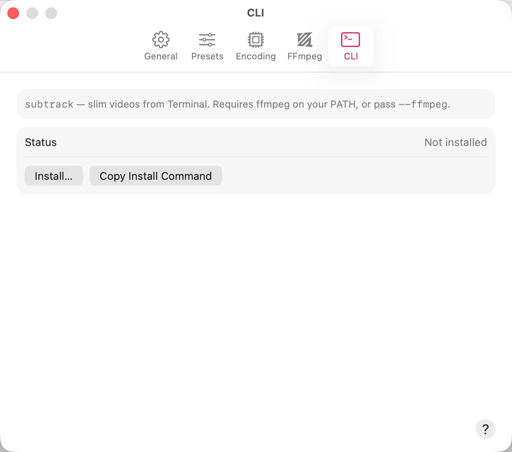

subtrack installieren
PATH befindet. Der Dialog öffnet sich bei
/usr/local/bin; ein bin-Ordner in deinem Benutzerordner funktioniert genauso gut
und erfordert keinen Administratorzugriff.Die Zeile Status zeigt dann den vollständigen Pfad, unter dem das Programm liegt, mit einer Taste Anzeigen, die es im Finder auswählt.
Wenn in den Ordner nicht geschrieben werden kann – was bei /usr/local/bin meistens der Fall ist –,
fragt SubTrack nicht nach deinem Administratorpasswort. Es hat kein privilegiertes Hilfsprogramm, dem es das
Passwort übergeben könnte, und eine App, die für das Kopieren einer Datei nach deinem Passwort fragt, ist eine
Gewohnheit, die du dir besser nicht angewöhnst. Der Bereich meldet Dieser Ordner erfordert Administratorzugriff –
führe stattdessen dies aus und zeigt den genauen Befehl sudo cp mit einer Taste
Kopieren. Füge ihn im Terminal ein und authentifiziere dich dort, wo du siehst, was du
autorisierst. Installationsbefehl kopieren macht dasselbe, ohne zuerst den Dialog zu öffnen,
und ist auf /usr/local/bin ausgerichtet.
Eine Installation, die du selbst ausführst, ist eine echte Installation, aber SubTrack hat sie nicht
durchgeführt und weiß nichts davon – Status zeigt weiterhin Nicht installiert.
Prüfe sie mit which subtrack.